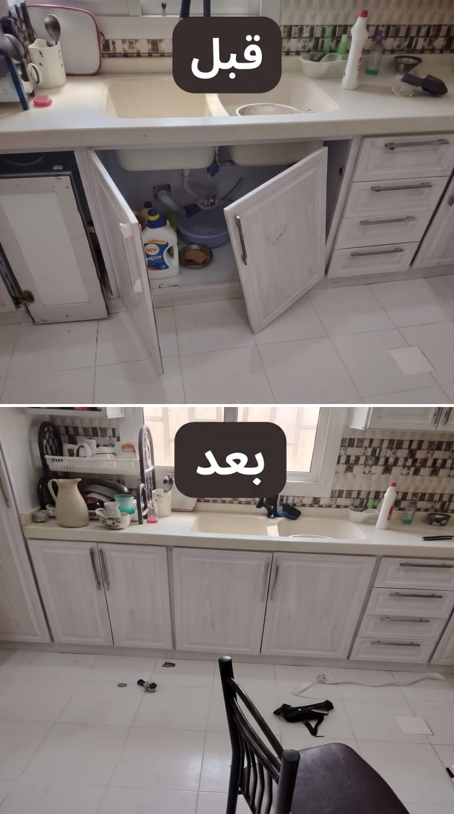
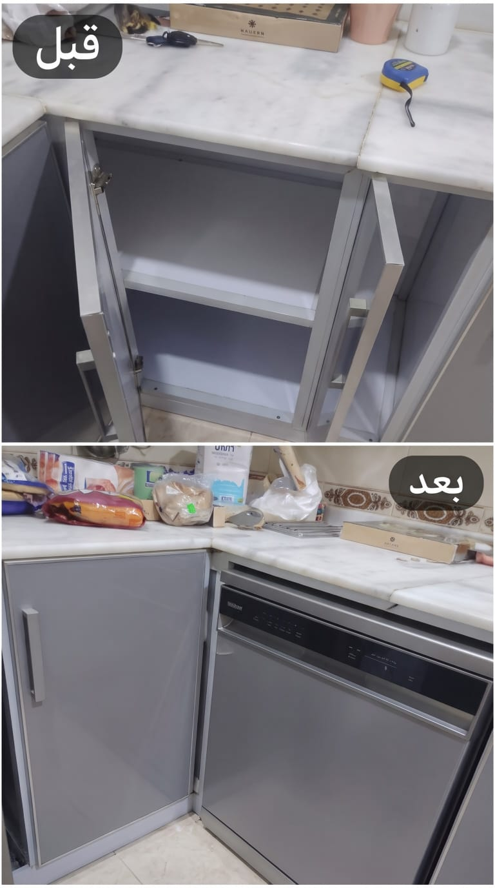
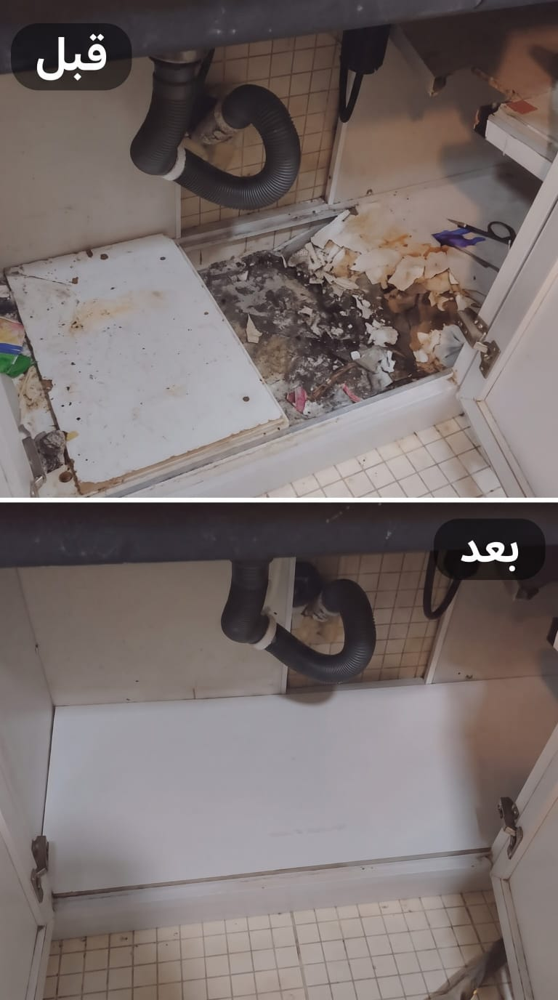
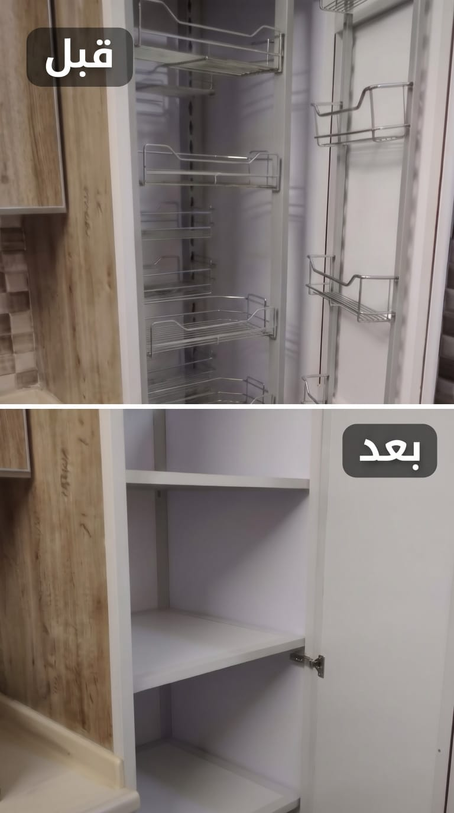
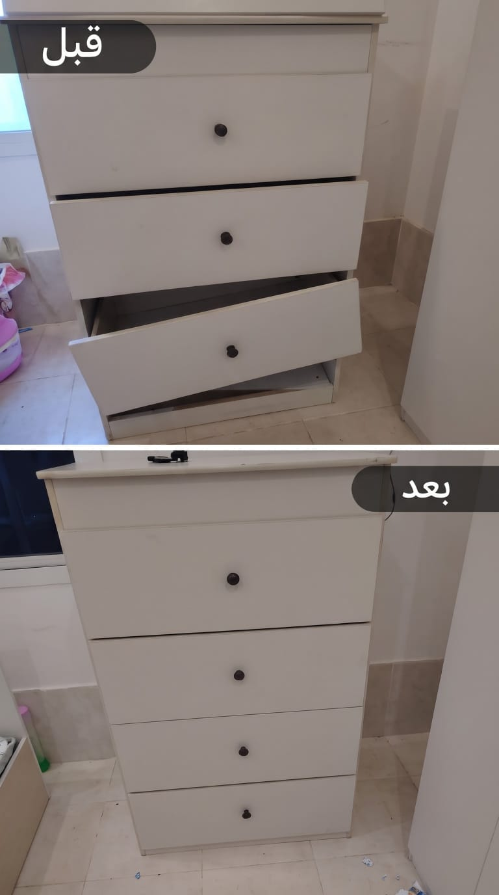

خدمة فورية متخصصة داخل جدة بقطع غيار أصلية وضمان دقة العمل

صيانة أبواب المطابخ ووزنية المفصلات: هل تعاني من ميلان الأبواب أو عدم إغلاقها بشكل محكم؟ لا داعي لاستبدال مطبخك بالكامل! نحن نعيد الحياة لأبواب مطبخك ونقوم بتركيب مفصلات هيدروليك أصلية وعالية الجودة تتحمل كثرة الاستخدام مع ضبط الميزان بدقة تامة لتغلق الأبواب بنعومة وسلاسة كأنها جديدة تماماً، تواصل معنا الآن واجعل مطبخك متناسقاً ومرتباً من جديد.

ترميم وتغيير الفورميكا التالفة أسفل المطبخ: تأثير المياه والرطوبة المتراكمة أسفل الأحواض يتسبب في تورم وتلف ألواح الخشب والفورميكا ويشوه المظهر العام؟ نحن نعالج الأسباب ونجدد الأجزاء المتضررة بالكامل ونستبدل الفورميكا بألواح جديدة معزولة وقوية ومقاومة للمياه لتعود متانة مطبخك وجماله كما كان، تواصل معنا فوراً لحل مشكلة الرطوبة والتلف بحرافية تامة.

تغيير سحابات ومجاري الأدراج التالفة: هل أصبحت أدراج مطبخك ثقيلة في الحركة أو تصدر أصواتاً مزعجة وتخرج عن مسارها وتتعبك في الفتح والإغلاق؟ نقدم لك الحل الجذري باستبدال المجاري القديمة بسحابات رولمان بلي أصلية وقوية تتحمل أثقل الأوزان وتمنع الاحتكاك نهائياً لتستمتع بحركة سلسة ومريحة للغاية، اطلب الخدمة الآن ولا تأجل راحة مطبخك.

صيانة وتعديل دولاب التخزين والدواليب الواقفة: الدواليب الطولية ووحدات التخزين والشبك والأرفف الداخلية تحتاج لخبرة ودقة لضمان ثباتها وعدم هبوطها مع مرور الوقت، نحن نتولى تعديل وصيانة وتثبيت كافة الدواليب وإعادة ضبط أرففها ومفصلاتها لتعمل بكفاءة عالية وتحمل كافة أغراض المطبخ بأمان تام، تواصل معنا الان لتحصل على أفضل خدمة صيانة بجدة.

تعديل وقص الدواليب لغسالة الصحون باحترافية: هل اشتريت غسالة صحون جديدة وتريد مكان دقيق لها داخل مطبخك الحالي؟ نحن نقوم بقص وتعديل الدواليب السفلية واحتواء المساحة باحترافية متناهية لتظهر غسالة الصحون كأنها مفصلة ومركبة في قلب المطبخ من الأساس وبدون أي تأثير على الشكل العام أو الديكور، تواصل معنا الآن واجعل مطبخك متكاملاً وعملياً بأعلى جودة.
علاج سقوط وارتخاء أبواب الدواليب وتركيب مفصلات هيدروليك أصلية ضد الصدأ مع ضبط ميزان الأبواب بدقة كاملة
استبدال مجاري وسحابات الأدراج التالفة بسحابات رولمان بلي قوية تتحمل الأوزان العالية مع نعومة تامة بالحركة
تجهيز وتعديل أماكن غسالات الصحون والميكرويف بدقة واحترافية عالية مع الحفاظ الكامل على شكل وديكور المطبخ
معالجة أضرار الرطوبة وتآكل الألواح وتغيير القواعد التالفة أسفل الأحواض وتثبيت الأرفف الهابطة باحترافية
تركيب مسكات حديثة وسلال سحب داخلية ومساعدات رفع هيدروليك للأبواب العلوية لتجديد مظهر المطبخ بالكامل